PHYS-S12 Intro to Digital Fabrication
Wire-Cutter CAD
For one of my household items, I created wire cutters that I found in the lab. I was browsing the tools because I knew I wanted to CAD something we frequently use. I stumbled upon the wire-cutters and considered it challenging enough to CAD.
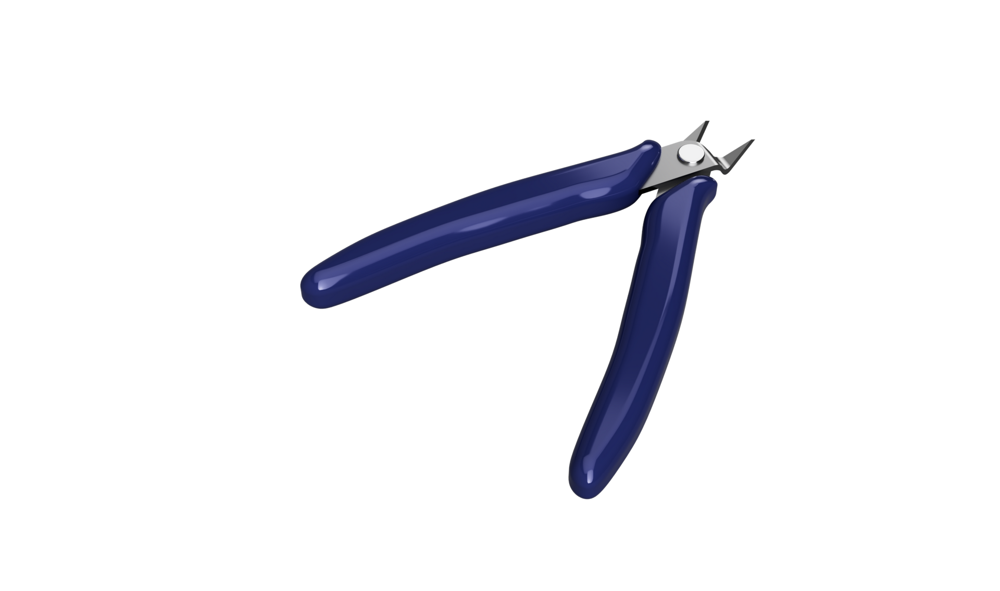Overview:
Design:
I started by designing the blade ur to actual cutter. The cutters have metal under the rubber and I wanted to account for that in my design as well. I used calipers to measure the thickness of the metal handle and to measure the blade. Next I used a protractor to measure the angle that the blade makes at the end.
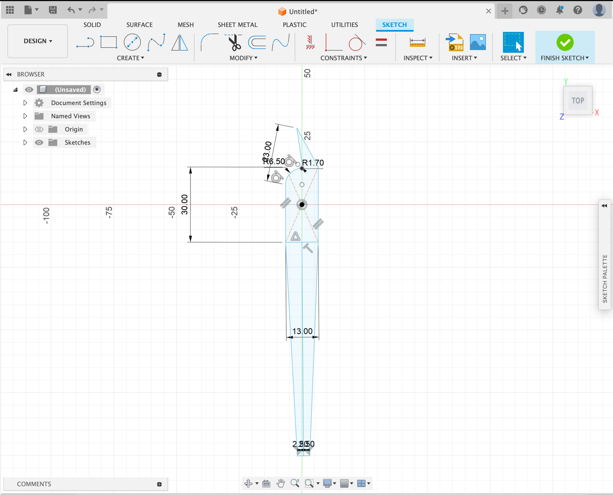 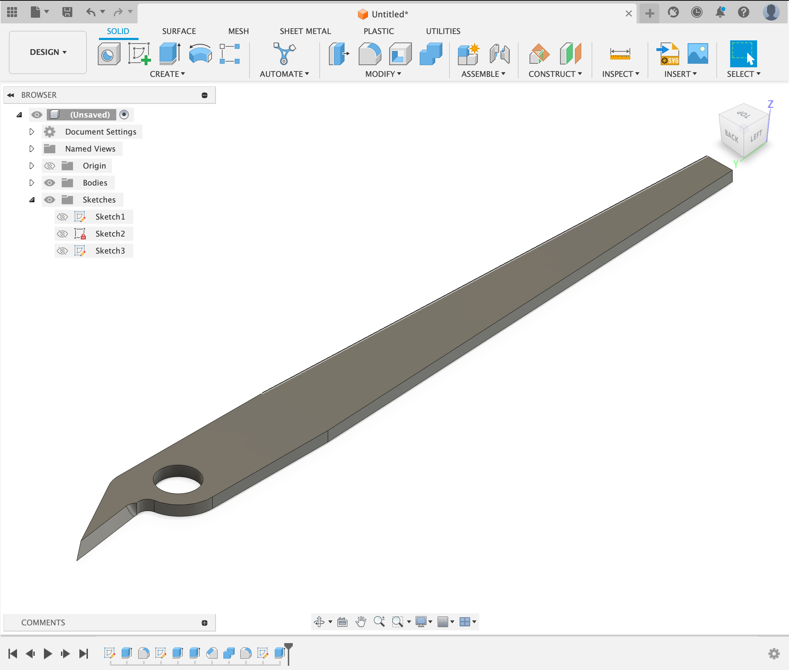 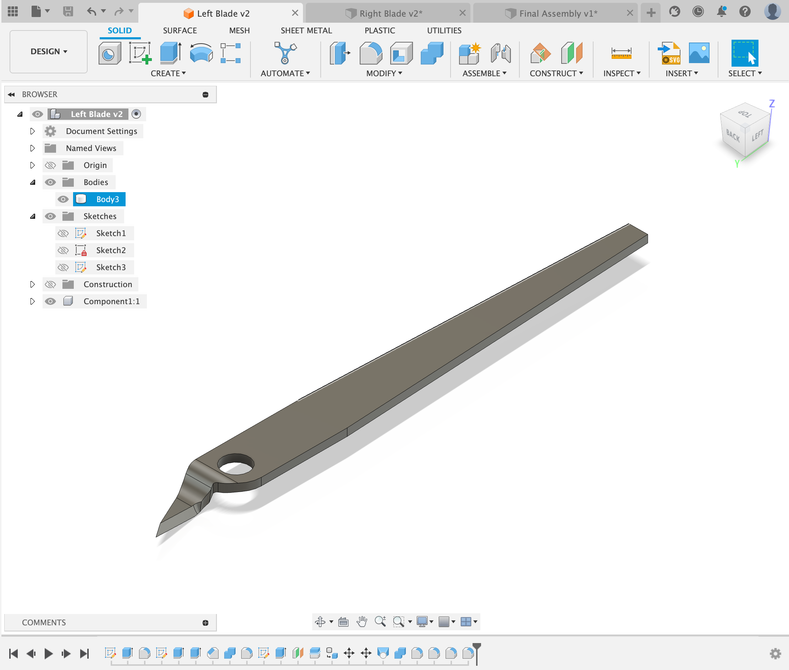 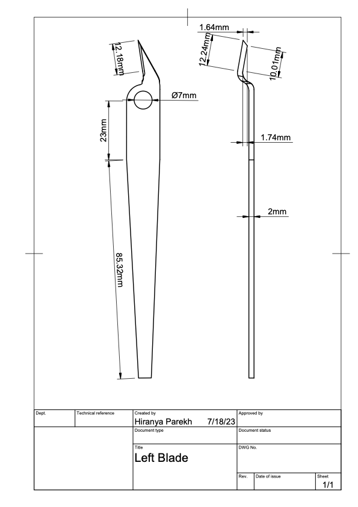After I designed one blade, I used the mirror tool to make the other blade as they are symmetrical.
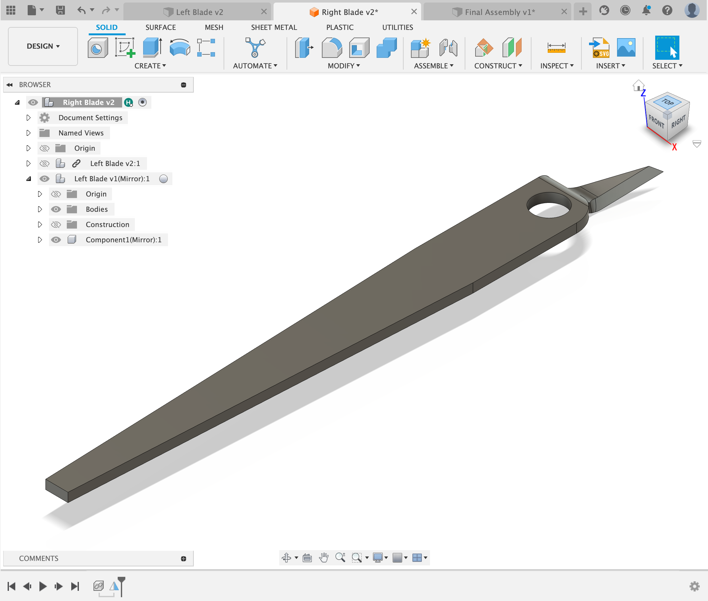Next, I started on the design of the rubber handle that houses the blades, for this I used a photo that I took of the object and a defined scale. I then imported that image into Fusion 360 and traced the handle. I used this technique as the shape of the blade was odd and this would provide a more accurate design.
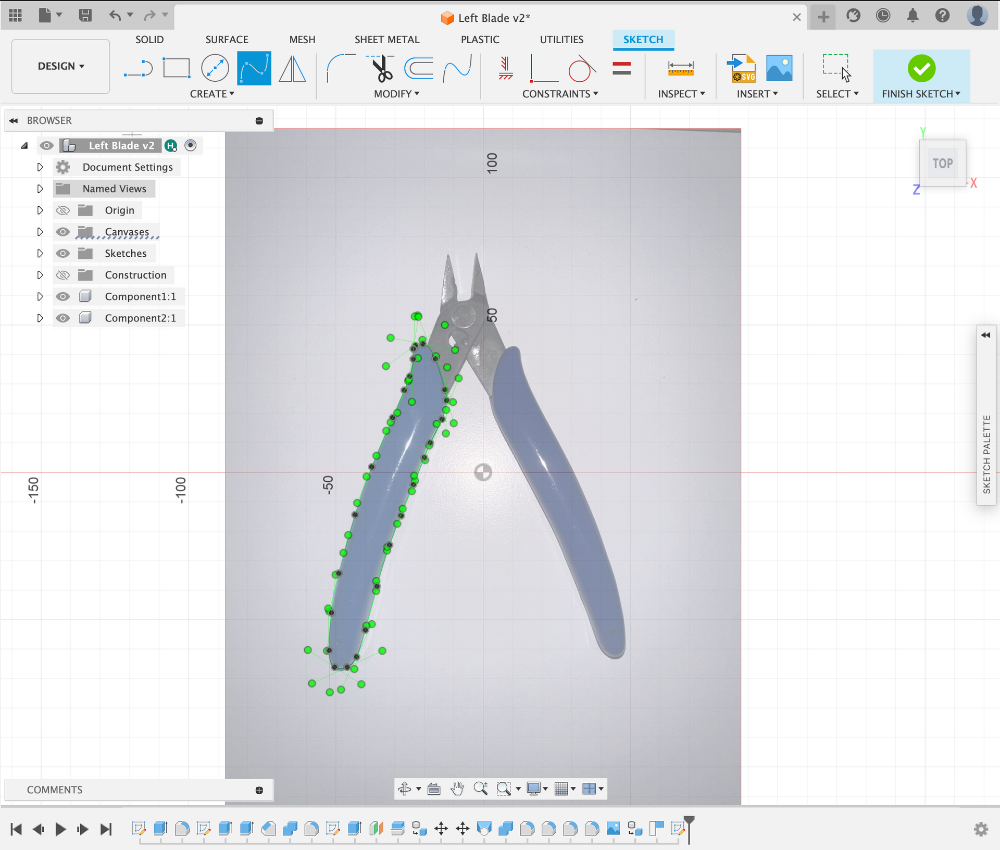I then extruded the traced shape, I measured the thickness of the handle with a caliper and extruded the sketch that amount. After that I filleted the edges as the edges of the handle were round.
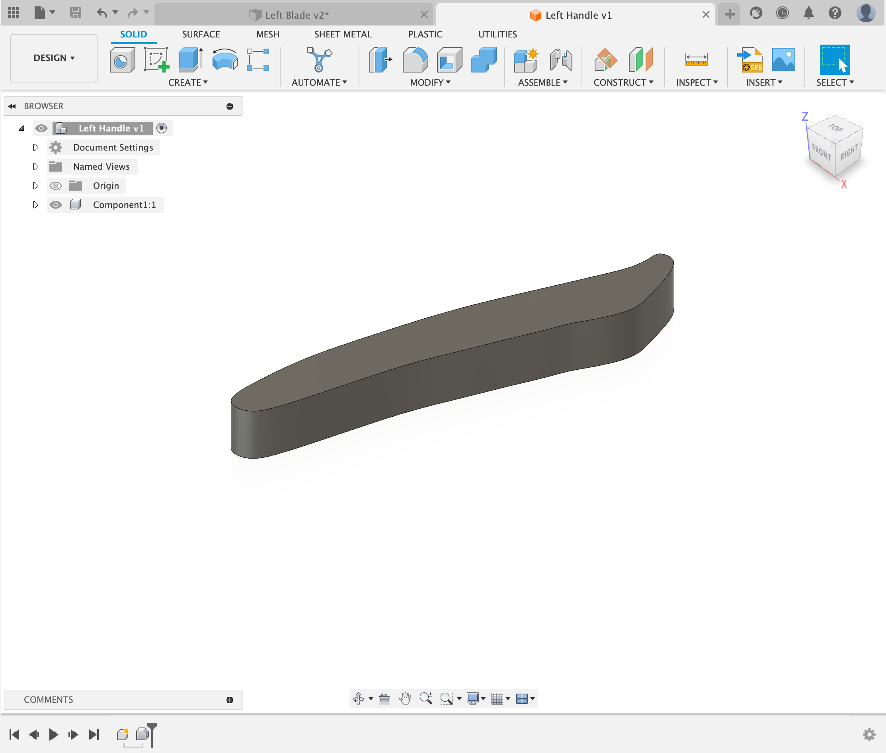 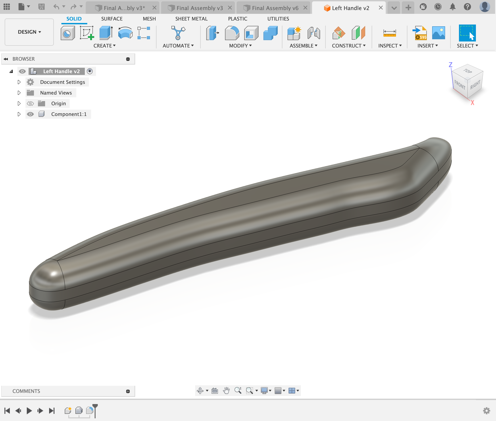Next added a slot for the metal blades to fit into and jointed the parts together. As the handle was blue, I also used the appearance tool to change the color of the handle.
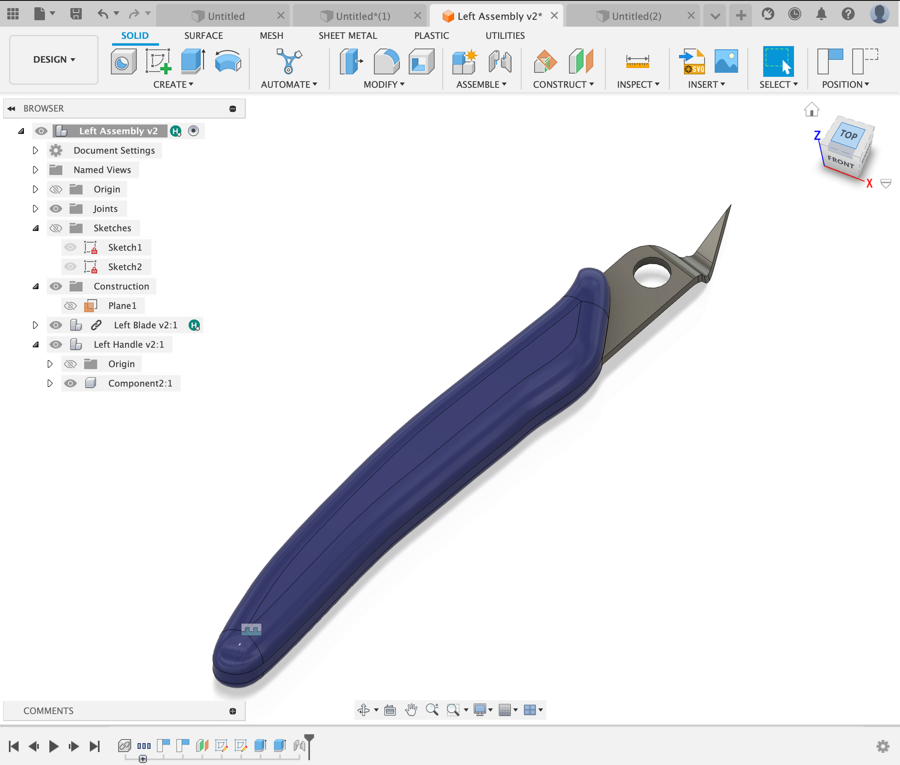Next I used the mirror tool to mirror the handle and jointed the other handle to the other blade.
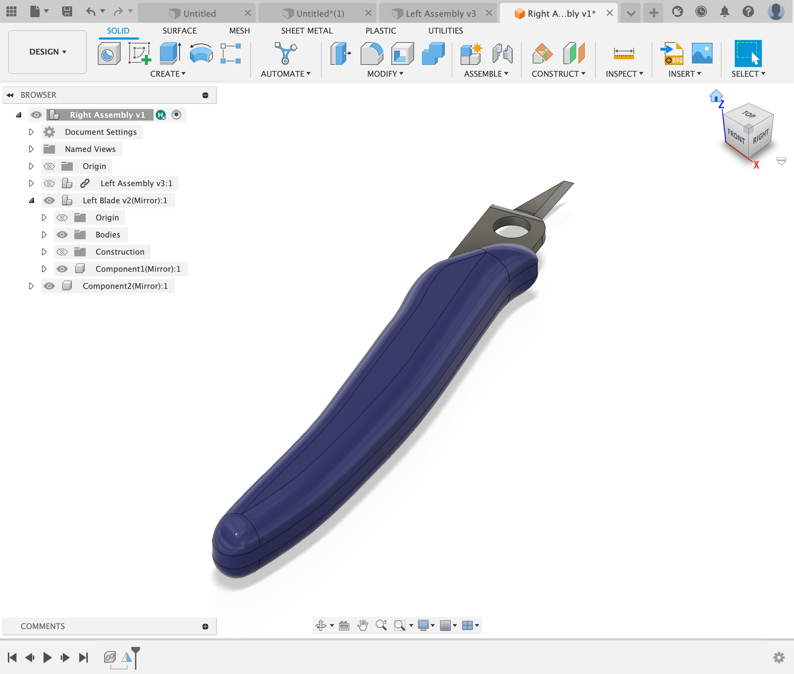I took the two components and jointed them together at the pivot point (hole on the blade). I made sure to make this a rotational joint and defined the minimum and maximum degrees of freedom that the joint can rotate. This ensures that the blade not only looks accurate, rather the motion is also accurately depicted. I also added the hinge into the pivot point, I used a caliper to measure this.
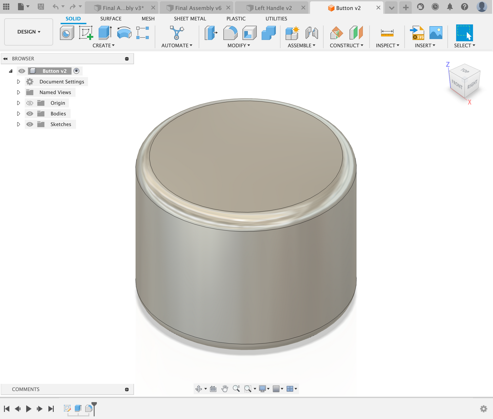 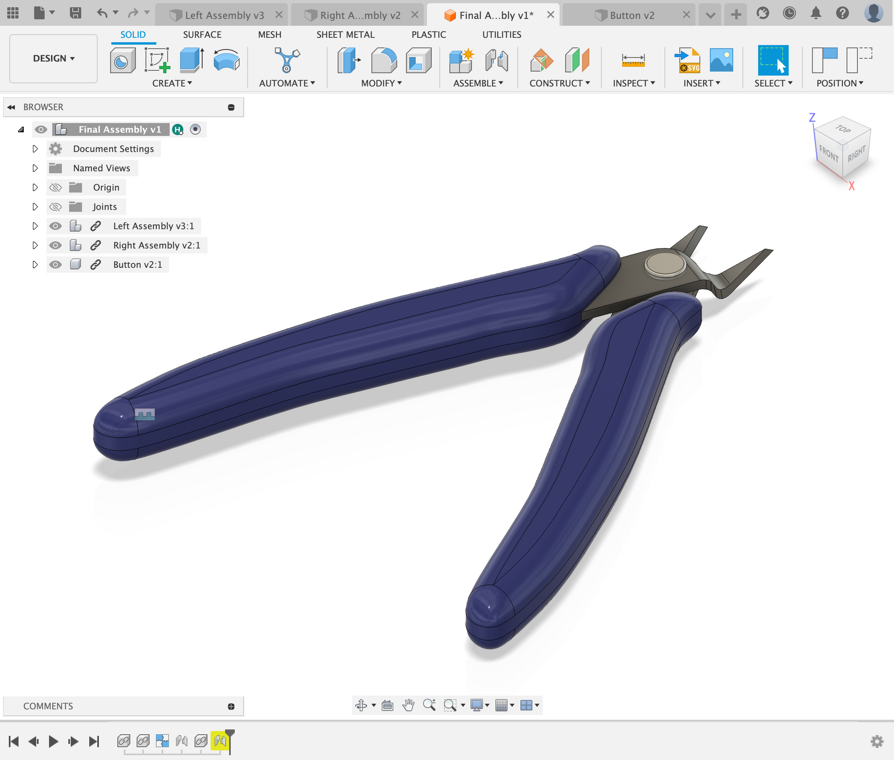In the end I ended with a set of wire-cutters that looked very similar to the wire-cutters in real life.